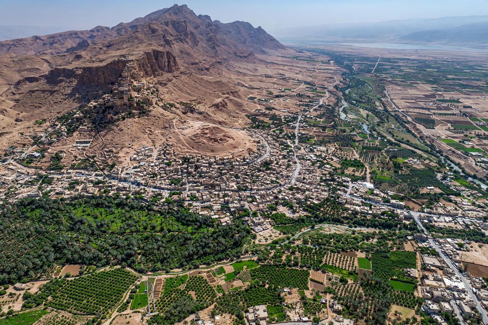

Jericho

City in the West Bank, Jordan Valley
Elevation: c. 258 m below sea level
Among the oldest continuously inhabited cities in the world
Jericho is a Palestinian city in the West Bank, located in the Jordan Valley near the Jordan River, west of the border with Jordan. Lying roughly 258 metres (846 ft) below sea level, it is often described as the lowest permanently inhabited place on Earth and one of the oldest continuously inhabited cities in the world, with evidence of settlement dating back some 11,000 years.
History
Natufian hunter-gatherers were present around 10,000 BCE, attracted by the perennial spring of Ein es-Sultan. By the Neolithic period (c. 9400–8000 BCE) Jericho had become a settled farming community protected by a massive stone wall and the famous Tower of Jericho, among the earliest monumental stone structures known. The town was occupied, abandoned and rebuilt repeatedly through the Bronze Age, when it was a Canaanite city.
Jericho is best known from the biblical account in the Book of Joshua, in which its walls collapsed after the Israelites marched around them — a story whose archaeological dating remains debated. In the Hellenistic and Roman periods the city became a winter resort; Herod the Great built palaces nearby. Jericho later passed through Byzantine, early Islamic, Crusader, Ayyubid, Mamluk and Ottoman rule. After the 1948 Arab–Israeli War it came under Jordanian administration, and since 1967 under Israeli occupation, though civil administration passed to the Palestinian Authority in 1994.
Archaeology
The ancient mound, Tell es-Sultan, was excavated by Charles Warren, Ernst Sellin and Carl Watzinger, John Garstang, and most famously Kathleen Kenyon in the 1950s, whose stratigraphic work established much of the site's Neolithic chronology. Notable finds include plastered human skulls and the Neolithic tower.
Landmarks
Sites include Tell es-Sultan, Hisham's Palace, the Mount of Temptation with its Greek Orthodox monastery, the sycamore tree associated with Zacchaeus, and the Jericho cable car. In 2023 Tell es-Sultan was inscribed as a UNESCO World Heritage Site.
See also: West Bank · Jordan River · Neolithic